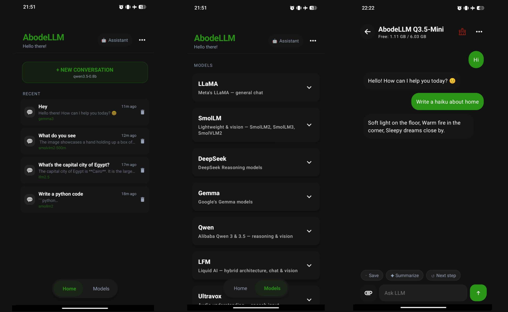

THE FRONT PAGE
EDITOR'S NOTE: As we trade the deliberate rigor of human systems for the accidental efficiency of unvetted code, one wonders if the gold we’ve synthesized will eventually buy back the craftsmanship we’ve spent. #The systemic fragility introduced by automated, black-box engineering.
Researchers finally resolved the long-standing discrepancy in nuclear reaction models that govern how neutron-star collisions forge heavy elements like gold—closing a gap between theory and observation, though the findings may complicate existing astrophysical simulations.
A Ukrainian UAV maintained stationary flight for 42 days using adaptive power throttling and solar augmentation, raising questions about tradeoffs between endurance and payload capacity in contested airspace. The feat relied on a custom model trained on NATO wind shear data, though real-world replication remains untested under jamming.
An enigmatic signal—broadcasting what appears to be Persian-encoded random numbers—has baffled radio monitors for months, raising questions about its origin: a cryptographic experiment gone rogue, a state-sponsored cipher test, or simply the world’s most elaborate prank. The episode underscores how even low-tech mediums can expose gaps in signal intelligence, where attribution remains stubbornly analog in an era of algorithmic surveillance.
Mkdnsite shifts the burden of content negotiation by serving raw Markdown to agents while rendering HTML for humans, effectively treating LLM crawlers as first-class citizens rather than scraping nuisances. It simplifies the stack but introduces a sharp dependency on the agent’s ability to parse nuances without the visual cues of a structured frontend.
Mapping 30,000 constitutional articles into a vector space reveals structural patterns across nations, yet risks reducing nuanced legal intent to mere mathematical proximity. The project suggests a future where law is indexed by distance rather than precedent, provided we accept the loss of localized historical context.
By targeting a C++ back end, ocamlc attempts to bridge functional purity with ubiquitous systems infrastructure, though the shift risks inherited technical debt from the very C++ complexities OCaml was designed to avoid. It is a pragmatic, if slightly somber, admission that interoperability often trumps linguistic elegance.
Dell’s 2026 XPS 14 achieved 43 hours of battery life in controlled tests, tripling the MacBook Air 15’s endurance, but early teardowns suggest a 20% heavier chassis and non-user-replaceable cells. The tradeoff: endurance now, obsolescence later.

AbodeLLM attempts to pull the inference cycle back from the cloud to the silicon in your pocket, though it trades the reliability of massive remote clusters for the thermal limits and battery drain of a mobile SoC.
MODEL RELEASE HISTORY
No confirmed model releases were detected for this edition date.